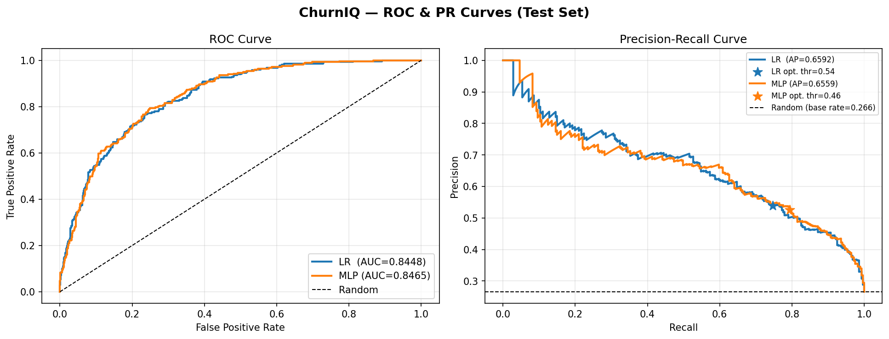
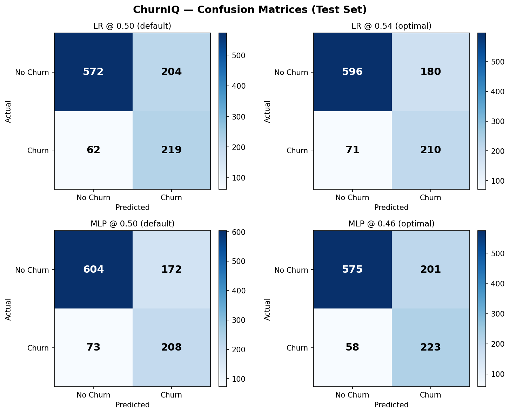
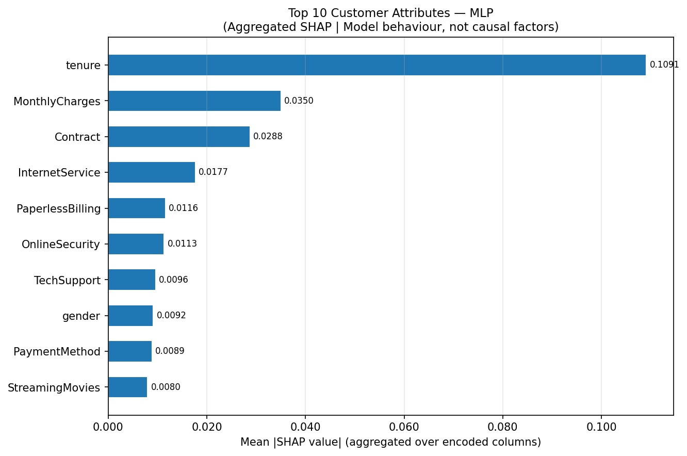
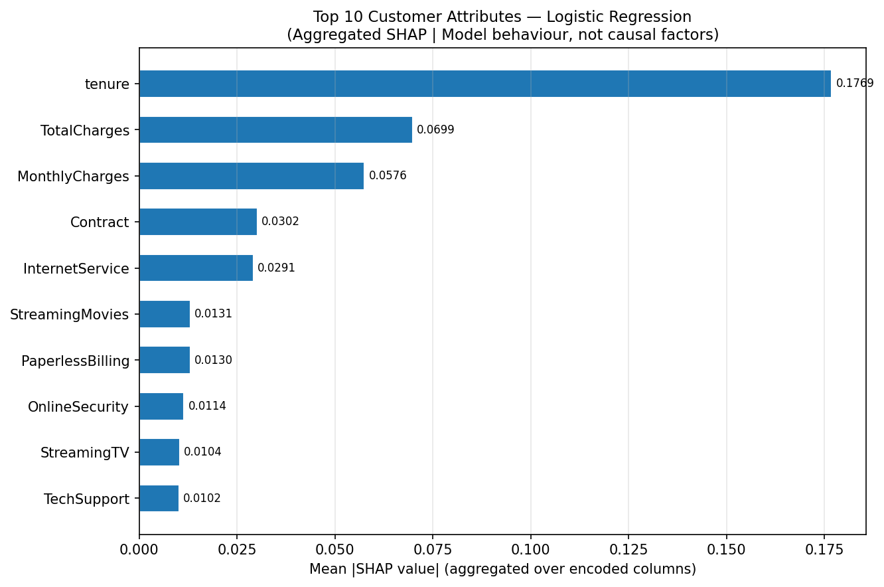
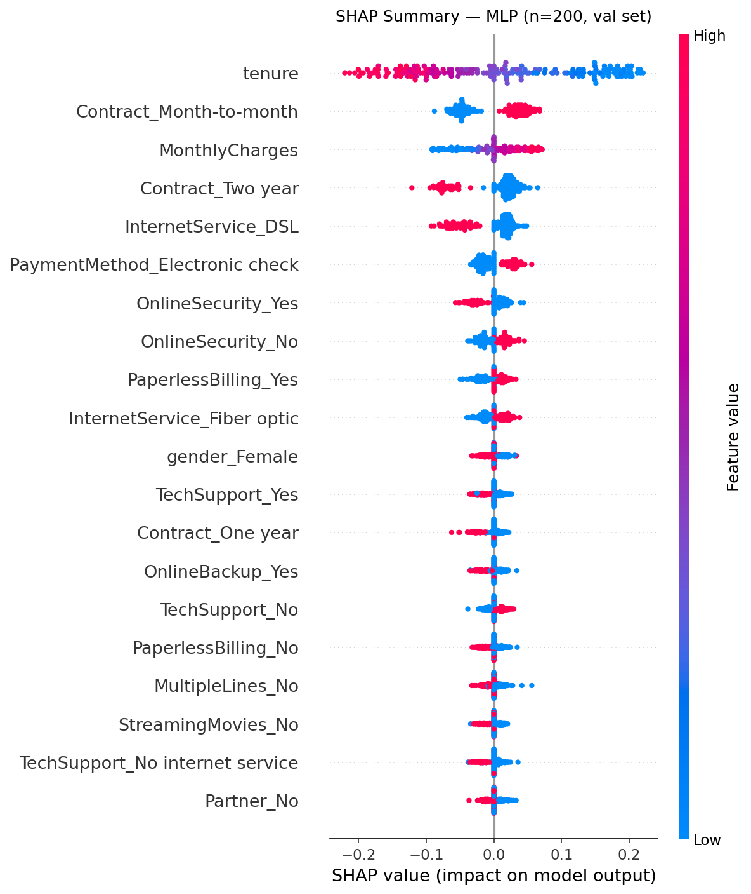
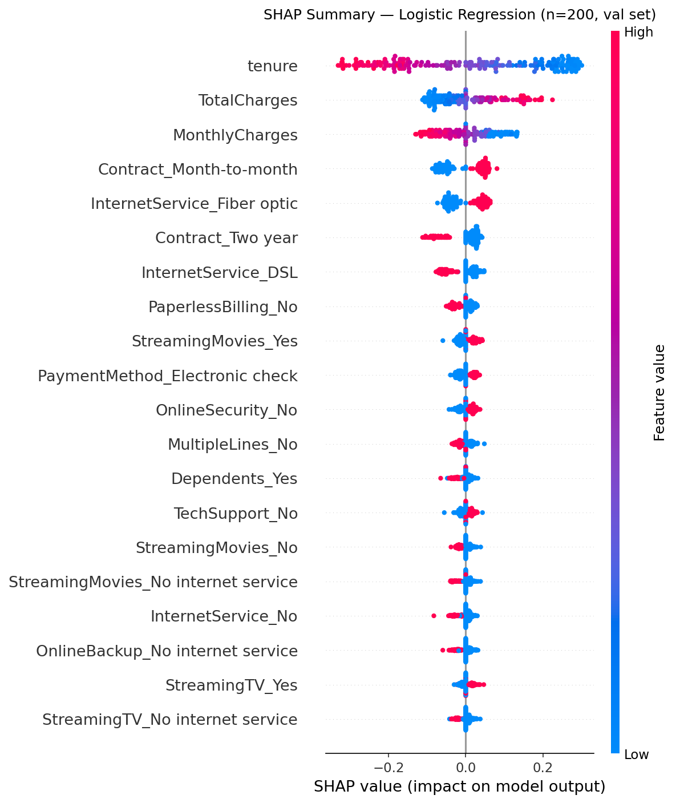

Course: AI & ML II (CSR311)
Project Title: ChurnIQ – AI-Powered Telecom Customer
Churn Prediction System
System Version: 1.0.0 (Production Release)
Student Name: Shaik Irfan
Roll Number: 44
Registration Number: 12407809
Programme: B.Tech Computer Science and Engineering (AI
& Data Engineering)
Institution: Lovely Professional University, Phagwara,
Punjab
Evaluation Rubric: 10-Mark Standard Technical
Assessment
Date of Submission: November 2026
Customer attrition (churn) directly impacts recurring revenue in subscription-based telecommunications. This report presents ChurnIQ, an end-to-end, leakage-free machine learning and deep learning system developed on the benchmark IBM Telco Customer Churn dataset (\(N = 7,043\)). To avoid methodological pitfalls prevalent in standard churn modeling, ChurnIQ strictly enforces data isolation via a 70/15/15 stratified partition, fitting all feature transformations exclusively on training data. A customized Deep Multilayer Perceptron (MLP)—architected with 46 input features, three regularized hidden layers (\(46 \rightarrow 64 \rightarrow 32 \rightarrow 16 \rightarrow 1\)), ReLU activations, \(L_2\) weight decay (\(\lambda = 0.001\)), dropout (\(p = 0.25\)), and 5,633 trainable parameters—was implemented in Keras 3 over the PyTorch CPU backend. The MLP is benchmarked against an \(L_2\)-penalized Logistic Regression baseline. Decision thresholds were optimized independently on validation data to maximize the \(F_1\)-score, yielding \(\tau^* = 0.46\) for the MLP and \(\tau^* = 0.54\) for Logistic Regression.
In a frozen, single-pass evaluation on the quarantined test partition (\(n = 1,057\), containing 281 ground-truth churners), the MLP achieved an \(F_1\)-score of 0.6326 (\(\text{ROC-AUC} = 0.8465\), \(\text{Recall} = 79.36\%\), \(\text{Precision} = 52.59\%\), capturing 223 churners), while Logistic Regression achieved an \(F_1\)-score of 0.6259 (\(\text{ROC-AUC} = 0.8448\), \(\text{Recall} = 74.73\%\), \(\text{Precision} = 53.85\%\), \(\text{PR-AUC} = 0.6592\)). The MLP demonstrated slightly higher test \(F_1\) and recall, whereas Logistic Regression exhibited higher PR-AUC and precision; this \(F_1\) difference is small (\(\Delta F_1 = +0.0067\)), and statistical significance was not formally tested. Model-agnostic Explainable AI (SHAP KernelExplainer) grounded in 75 stratified real training records revealed tenure, monthly charges, contract terms, fiber optic internet, and lack of security add-ons as the dominant predictive drivers, while emphasizing that SHAP reflects model sensitivity rather than real-world causality. Finally, predictions are operationalized through a decoupled 3-tier business risk stratification engine (Low \(< 0.30\), Medium \(0.30–0.70\), High \(\ge 0.70\)), an interactive 7-page Streamlit dashboard, and an 85-test automated verification suite.
In subscription telecommunications (e.g., cellular service, home broadband, streaming bundles), customer attrition—commonly designated as “churn”—refers to the phenomenon where a subscriber cancels their contract or migrates to a competing provider. Because telecommunications markets in developed economies have reached high penetration and saturation, net subscriber growth cannot rely purely on unserviced market expansion. Instead, service providers operate in a mature, competitive landscape where customer acquisition typically incurs substantially higher sales, marketing, and onboarding expenses than proactive customer retention.
Consequently, predictive churn modeling serves as a critical strategic imperative: 1. Recurring Revenue Preservation: Proactive identification of at-risk subscribers allows providers to stabilize Monthly Recurring Revenue (MRR) and mitigate subscriber lifetime value erosion. 2. Potential Asymmetric Error Costs: In churn management, classification errors carry asymmetric operational implications: - A False Negative (FN)—failing to identify a customer who is considering churn—poses an operational risk of unaddressed subscriber defection, potentially forfeiting future recurring revenue if the subscriber leaves without intervention. - A False Positive (FP)—flagging a retained subscriber as at-risk—may incur operational costs such as staff outreach time, unnecessary customer contact, or unneeded promotional discount offers. Therefore, higher recall on the positive churn class is typically prioritized to mitigate defection risks, provided false positive costs remain within budgeted retention margins. 3. Actionable Retention: Predictions must be accompanied by granular explanations so customer retention agents can address specific subscriber grievances (e.g., pricing dissatisfaction, inadequate tech support, or contract inflexibility).
The ChurnIQ system was designed to address three systemic failures observed in industry churn workflows: - Eliminate Data Leakage: Ensure data cleaning, imputation, and feature transformations are fitted strictly on training data without contaminating validation or test sets. - Overcome Default Threshold Biases: Eliminate the arbitrary default decision threshold of \(\tau = 0.50\), tuning decision boundaries on validation data to maximize operational \(F_1\)-score. - Provide Model-Agnostic Explainability: Bridge deep neural network predictions with frontline retention specialists via SHAP feature attributions.
The system is built and benchmarked using the authoritative
IBM Telco Customer Churn dataset
(WA_Fn-UseC_-Telco-Customer-Churn.csv). The dataset
contains \(N = 7,043\) individual
subscriber records, each documented across 21 original columns: -
Demographics (4 columns): gender,
SeniorCitizen, Partner,
Dependents. - Subscribed Telephony & Internet
Services (9 columns): PhoneService,
MultipleLines, InternetService (DSL, Fiber
optic, No), OnlineSecurity, OnlineBackup,
DeviceProtection, TechSupport,
StreamingTV, StreamingMovies. -
Account Contracting & Billing (7 columns):
tenure (months active), Contract
(Month-to-month, One year, Two year), PaperlessBilling,
PaymentMethod (Electronic check, Mailed check, Bank
transfer, Credit card), MonthlyCharges,
TotalCharges, and metadata key customerID. -
Target Variable (1 column): Churn
(Yes or No).
The target distribution demonstrates a natural class imbalance
representative of real-world telecommunications: - Non-Churners
(Churn = No): 5,174 subscribers (\(73.46\%\)) - Churners
(Churn = Yes): 1,869 subscribers (\(26.54\%\)) - Imbalance
Ratio: Approximately \(2.77 :
1\).
Because nearly three-quarters of the dataset represents non-churners, naive classifiers predicting the majority class would achieve an apparent accuracy of \(73.46\%\) while completely failing to identify any churners (\(0\%\) recall). This imbalance necessitates specialized handling through stratified sampling, balanced loss weighting, and threshold tuning.
customerID)The customerID attribute consists of unique arbitrary
alphanumeric identifiers (e.g., 7590-VHVEG). It was
strictly excluded from the predictive feature set. Unique identifiers
have maximal cardinality (\(7,043\)
unique values for \(7,043\) rows) and
carry zero generalizable predictive signal regarding subscriber
behavior. Including identifier tokens in a parametric model or neural
network risks arbitrary memorization and overfitting on spurious
training noise. In ChurnIQ, customerID is isolated purely
as an immutable tracking key in auxiliary metadata.
Raw Dataset (7,043 rows, 21 columns)
│
▼
Data Hygiene & Sanitization (TotalCharges whitespace -> 0.0, Target -> {0, 1})
│
▼
3-Way Stratified Partitioning (Random Seed = 42)
├── Training Partition: 4,930 rows (70.0%) [1,308 churners, 3,622 non-churners]
├── Validation Partition: 1,056 rows (15.0%) [ 280 churners, 776 non-churners]
└── Test Partition: 1,057 rows (15.0%) [ 281 churners, 776 non-churners] (Quarantined)
│
▼
ColumnTransformer Pipeline (Fitted Exclusively on Training Partition)
├── 3 Numeric Columns: StandardScaler (fit on Train) -> tenure, MonthlyCharges, TotalCharges
└── 16 Categorical Columns: OneHotEncoder(handle_unknown='ignore') -> 43 orthogonal dummy features
│
▼
Exact Output Feature Vector: 46 Predictive FeaturesDuring schema inspection, 11 subscriber records were identified
containing whitespace strings (" ") within the
TotalCharges field. Converting this column to
floating-point representation without prior sanitization causes parser
failure.
Crucially, an audit of these 11 records demonstrated that every
record had an account tenure == 0. These records represent
newly onboarded subscribers who enrolled during the current active
billing cycle and had not yet completed their first monthly billing
cycle. Dropping these 11 rows would introduce sample selection bias, and
imputing them with the global mean or median would introduce false
historical spend. The mathematically sound resolution was imputing
TotalCharges = 0.0, reflecting their true zero billing
history. Target binarization mapped No to \(0\) and Yes to \(1\).
To ensure rigorous validation without distribution shift, the
sanitized dataset was split using a 70/15/15 stratified
partition seeded deterministically (seed=42): -
Training Set: 4,930 records (1,308 churners, \(26.53\%\)) - Validation
Set: 1,056 records (280 churners, \(26.52\%\)) - Test Set:
1,057 records (281 churners, \(26.58\%\))
Stratification guarantees that the \(2.77:1\) class balance is identically preserved across all three splits. Set intersection verification confirms zero customer ID overlap across partitions (\(|\mathcal{S}_{\text{train}} \cap \mathcal{S}_{\text{val}}| = 0\), \(|\mathcal{S}_{\text{train}} \cap \mathcal{S}_{\text{test}}| = 0\)).
Features are categorized and transformed using an automated
Scikit-learn ColumnTransformer: 1. Continuous
Scaling (3 features): tenure,
MonthlyCharges, and TotalCharges are scaled to
zero mean and unit variance via StandardScaler: \[z = \frac{x -
\mu_{\text{train}}}{\sigma_{\text{train}}}\] 2.
Categorical Encoding (16 features): Multi-class and
binary categorical features are encoded using
OneHotEncoder(drop=None, handle_unknown='ignore'). This
unpacks demographic, service, and contract categories into 43
orthogonal binary dummy columns. 3. Total Feature
Space: Combining 3 continuous scaled attributes with 43 one-hot
columns produces an exact vector dimension of 46 predictive
features.
Data leakage occurs when information from outside the training
partition contaminates model construction. If a preprocessor (such as
StandardScaler or OneHotEncoder) is fitted on
the entire dataset prior to splitting, the transformation parameters
(\(\mu\), \(\sigma\), category dictionaries) encode
statistical properties of the test set. This produces over-optimistic
evaluation metrics that degrade sharply in production.
In ChurnIQ, data leakage is prevented mathematically: - The
ColumnTransformer is fitted exclusively on the
training split (\(X_{\text{train}}\)). - The resulting
scaling parameters \(\mu_{\text{train}}\) and \(\sigma_{\text{train}}\) are frozen and
serialized into models/preprocessor.joblib. - Validation
(\(X_{\text{val}}\)) and test (\(X_{\text{test}}\)) partitions are
transformed using the frozen parameters. - Out-of-vocabulary categorical
levels in future inference are safely mapped to all-zero vectors via
handle_unknown='ignore', preventing runtime exceptions.
The primary deep learning model in ChurnIQ is a custom feedforward Multilayer Perceptron (MLP) architected specifically for structured tabular classification. The network maps the 46-dimensional input vector to a single churn probability via three fully connected (Dense) hidden layers with regularization:
\[\text{Input } (46) \longrightarrow \text{Dense}(64) \longrightarrow \text{Dropout}(0.25) \longrightarrow \text{Dense}(32) \longrightarrow \text{Dropout}(0.25) \longrightarrow \text{Dense}(16) \longrightarrow \text{Dense}(1, \text{Sigmoid})\]
========================================================================================
Layer (type) Output Shape Param # Activation / Regularizer
========================================================================================
Input Layer (None, 46) 0 None (Normalized Features)
Dense Hidden 1 (None, 64) 3,008 ReLU + L2(0.001)
Dropout 1 (None, 64) 0 Rate = 0.25
Dense Hidden 2 (None, 32) 2,080 ReLU + L2(0.001)
Dropout 2 (None, 32) 0 Rate = 0.25
Dense Hidden 3 (None, 16) 528 ReLU + L2(0.001)
Output Layer (None, 1) 17 Sigmoid
========================================================================================
Total Parameters: 16,901 (includes optimizer momentum/velocity states)
Trainable Layer Parameters: 5,633
Non-trainable Parameters: 0
========================================================================================The number of trainable parameters in a fully connected dense layer connecting an input dimension \(n_{\text{in}}\) to an output dimension \(n_{\text{out}}\) with bias is given by:
\[P = (n_{\text{in}} \times n_{\text{out}}) + n_{\text{out}}\]
Applying this formula layer by layer: 1. Hidden Layer 1 (Dense 64): \[P_1 = (46 \times 64) + 64 = 2,944 + 64 = \mathbf{3,008} \text{ parameters}\] 2. Hidden Layer 2 (Dense 32): \[P_2 = (64 \times 32) + 32 = 2,048 + 32 = \mathbf{2,080} \text{ parameters}\] 3. Hidden Layer 3 (Dense 16): \[P_3 = (32 \times 16) + 16 = 512 + 16 = \mathbf{528} \text{ parameters}\] 4. Output Layer (Dense 1): \[P_{\text{out}} = (16 \times 1) + 1 = 16 + 1 = \mathbf{17} \text{ parameters}\]
\[\text{Total Trainable Parameters} = 3,008 + 2,080 + 528 + 17 = \mathbf{5,633} \text{ parameters}\]
The network capacity (\(5,633\) parameters) is balanced: sufficiently expressive to capture non-linear feature interactions across 46 inputs, but compact enough to prevent memorization on \(4,930\) training records.
Non-linear activation functions enable the MLP to learn complex decision boundaries: 1. Rectified Linear Unit (ReLU): Applied across all hidden layers: \[f(z) = \max(0, z), \quad f'(z) = \begin{cases} 1 & \text{if } z > 0 \\ 0 & \text{if } z \le 0 \end{cases}\] Academic Justification: Unlike saturating activations (e.g., Sigmoid or Tanh), ReLU maintains a constant gradient of \(1.0\) for positive activations. This substantially mitigates the vanishing gradient problem during backpropagation and accelerates convergence in deep feedforward networks. 2. Sigmoid (Logistic Activation): Applied exclusively at the output neuron: \[\sigma(z) = \frac{1}{1 + e^{-z}}, \quad \sigma'(z) = \sigma(z)(1 - \sigma(z))\] Academic Justification: The Sigmoid function maps real-valued logits \(z \in (-\infty, +\infty)\) monotonically into the open probability interval \(\hat{y} \in (0, 1)\). This provides a mathematically valid posterior probability \(\hat{y} = P(\text{Churn} = 1 \mid \mathbf{x})\) suitable for binary thresholding and business risk scoring.
For a training sample \((\mathbf{x}_i, y_i)\) with ground-truth binary label \(y_i \in \{0, 1\}\) and predicted probability \(\hat{y}_i = \sigma(z_i)\), the Binary Cross-Entropy (BCE) loss is formulated as:
\[\mathcal{L}_{\text{BCE}}(y_i, \hat{y}_i) = -\left[ y_i \log(\hat{y}_i) + (1 - y_i) \log(1 - \hat{y}_i) \right]\]
Incorporating class-specific weighting terms \(w_0\) and \(w_1\) to combat class imbalance yields the weighted loss:
\[\mathcal{L}(\theta) = -\frac{1}{N} \sum_{i=1}^N \left[ w_1 y_i \log(\hat{y}_i) + w_0 (1 - y_i) \log(1 - \hat{y}_i) \right] + \frac{\lambda}{2} \sum_{l=1}^L \|W^{[l]}\|_F^2\]
Why BCE over Mean Squared Error (MSE)? In classification tasks, pairing MSE with a Sigmoid output neuron produces non-convex loss surfaces with flat plateaus where the derivative \(\sigma'(z) \to 0\), causing gradient vanishing for confident but incorrect predictions. In contrast, under BCE, the derivative with respect to the pre-activation logit simplifies to:
\[\frac{\partial \mathcal{L}_{\text{BCE}}}{\partial z_i} = \hat{y}_i - y_i\]
The error signal scales linearly with prediction residual, providing strong, stable gradient updates throughout optimization.
Backpropagation computes parameter gradients via the multivariable chain rule of calculus: 1. Forward Propagation: \[Z^{[1]} = W^{[1]} X + b^{[1]}, \quad A^{[1]} = \text{ReLU}(Z^{[1]})\] \[Z^{[2]} = W^{[2]} A^{[1]} + b^{[2]}, \quad A^{[2]} = \text{ReLU}(Z^{[2]})\] \[Z^{[3]} = W^{[3]} A^{[2]} + b^{[3]}, \quad A^{[3]} = \text{ReLU}(Z^{[3]})\] \[Z^{[4]} = W^{[4]} A^{[3]} + b^{[4]}, \quad \hat{Y} = \sigma(Z^{[4]})\] 2. Backward Propagation: Starting from the output loss \(\delta^{[4]} = \frac{\partial \mathcal{L}}{\partial Z^{[4]}} = \hat{Y} - Y\): \[\frac{\partial \mathcal{L}}{\partial W^{[4]}} = \frac{1}{m} \delta^{[4]} (A^{[3]})^T + \lambda W^{[4]}, \quad \frac{\partial \mathcal{L}}{\partial b^{[4]}} = \frac{1}{m} \sum \delta^{[4]}\] Propagating error backward through each hidden layer \(l \in \{3, 2, 1\}\): \[\delta^{[l]} = \left( (W^{[l+1]})^T \delta^{[l+1]} \right) \odot f'(Z^{[l]})\] \[\frac{\partial \mathcal{L}}{\partial W^{[l]}} = \frac{1}{m} \delta^{[l]} (A^{[l-1]})^T + \lambda W^{[l]}, \quad \frac{\partial \mathcal{L}}{\partial b^{[l]}} = \frac{1}{m} \sum \delta^{[l]}\] where \(\odot\) denotes the Hadamard element-wise product and \(f'(Z^{[l]})\) is the subgradient of the ReLU activation.
Optimization is executed via Adam (Adaptive Moment Estimation), which maintains individual adaptive learning rates for each parameter by computing exponentially decaying moving averages of past gradients and squared gradients: 1. First Moment Estimate (Momentum): \[m_t = \beta_1 m_{t-1} + (1 - \beta_1) g_t\] 2. Second Moment Estimate (Uncentered Variance): \[v_t = \beta_2 v_{t-1} + (1 - \beta_2) g_t^2\] 3. Bias Corrections (compensating for zero initialization): \[\hat{m}_t = \frac{m_t}{1 - \beta_1^t}, \quad \hat{v}_t = \frac{v_t}{1 - \beta_2^t}\] 4. Parameter Update Rule: \[\theta_{t+1} = \theta_t - \frac{\eta}{\sqrt{\hat{v}_t} + \epsilon} \hat{m}_t\]
Hyperparameter Settings: Learning rate \(\eta = 0.001\), batch size = \(32\), first-moment decay \(\beta_1 = 0.9\), second-moment decay \(\beta_2 = 0.999\), and numerical stability constant \(\epsilon = 10^{-7}\).
To prevent overfitting on the \(4,930\) training records, ChurnIQ integrates two complementary regularization mechanisms: 1. \(L_2\) Weight Regularization (Weight Decay): Applied to the weight matrices of all three hidden layers with coefficient \(\lambda = 0.001\). By penalizing the squared Frobenius norm \(\|W\|_F^2\), \(L_2\) decay constrains weight magnitudes, discouraging the network from relying on extreme coefficients. 2. Dropout (\(p = 0.25\)): Applied after Hidden Layer 1 and Hidden Layer 2. During each forward training pass, \(25\%\) of hidden neuron activations are randomly masked to zero. This prevents co-adaptation where neurons compensate for each other’s errors, forcing the network to learn robust, generalized representations. At test time, dropout is deactivated and weights are scaled automatically.
To ensure stability on Windows systems with active Smart App Control
(which blocks native TensorFlow C-extensions), the neural network was
authored in Keras 3.15.1 using the PyTorch
2.15.0+cpu backend (KERAS_BACKEND=torch). This
guarantees high-performance tensor execution and strict numerical
reproducibility without requiring external compilation dependencies.
The MLP was trained using mini-batch gradient descent with a batch size of \(32\) samples over a maximum budget of \(50\) epochs. At each epoch, the dataset was shuffled, and mini-batches were streamed through forward and backward passes.
To prevent the model from defaulting toward non-churner predictions, class weights were calculated using the inverse class frequency heuristic:
\[W_c = \frac{N_{\text{train}}}{2 \cdot N_c}\]
For the training partition (\(N_{\text{train}} = 4,930\), \(N_0 = 3,622\), \(N_1 = 1,308\)): - Majority Class (Non-Churn, \(c=0\)): \[W_0 = \frac{4,930}{2 \times 3,622} \approx \mathbf{0.6806}\] - Minority Class (Churn, \(c=1\)): \[W_1 = \frac{4,930}{2 \times 1,308} \approx \mathbf{1.8846}\]
These weights rescale the loss contribution of each sample during backpropagation, penalizing positive-class residuals approximately \(2.77\times\) more heavily than negative-class residuals.
Overfitting was monitored via an EarlyStopping callback
tracking validation loss (val_loss) with: -
patience = 3: Training halts if validation loss fails to
improve for 3 consecutive epochs. -
restore_best_weights = True: Automatically rolls back
parameters to the epoch with minimum validation loss.
Convergence Trajectory: - Training proceeded stably from
Epoch 1 (\(\text{loss} = 0.6776\),
\(\text{val\_loss} = 0.6351\)). - The
network reached its global minimum validation loss at Epoch
11 (\(\text{val\_loss} =
\mathbf{0.5227}\), \(\text{loss} =
0.5288\), \(\text{val\_accuracy} =
0.7519\)). - Across epochs 12, 13, and 14, validation loss
plateaued (\(\text{val\_loss} = 0.5555,
0.5443, 0.5293\)). - Early stopping triggered at Epoch
14, immediately restoring the optimal weights from Epoch 11
into models/mlp_churn_model.keras.
Standard machine learning classifiers apply a fixed decision boundary at \(\tau = 0.50\). For imbalanced target classes, \(\tau = 0.50\) depresses recall because predicted probabilities cluster at lower magnitudes. ChurnIQ independently searches for the optimal decision threshold \(\tau^*\) that maximizes the harmonic mean of precision and recall (\(F_1\)-score) exclusively on the validation set:
\[\tau^* = \arg\max_{\tau \in [0.05, 0.95]} F_1(\tau; \mathcal{D}_{\text{val}})\]
Validation Optimization Results: - Logistic Regression: - Default Threshold (\(\tau = 0.50\)): \(F_1 = 0.6247\) (\(\text{Precision} = 0.5067\), \(\text{Recall} = 0.8143\)) - Optimal Threshold (\(\tau^* = \mathbf{0.54}\)): \(F_1 = \mathbf{0.6329}\) (\(\text{Precision} = 0.5220\), \(\text{Recall} = 0.8036\)) - Optimization Delta: \(\Delta F_1 = +0.0082\) - Multilayer Perceptron (MLP): - Default Threshold (\(\tau = 0.50\)): \(F_1 = 0.6289\) (\(\text{Precision} = 0.5211\), \(\text{Recall} = 0.7929\)) - Optimal Threshold (\(\tau^* = \mathbf{0.46}\)): \(F_1 = \mathbf{0.6319}\) (\(\text{Precision} = 0.5134\), \(\text{Recall} = 0.8214\)) - Optimization Delta: \(\Delta F_1 = +0.0030\)
The optimal threshold metadata was frozen in
models/threshold_metadata.json prior to any test set
evaluation.
The test set was excluded entirely from threshold search. Selecting thresholds on test data constitutes subtle data snooping (evaluating multiple hyperparameter variants on the test set and selecting the best one). By freezing \(\tau^*\) using only validation data, the subsequent test evaluation provides an unbiased estimate of real-world generalization.
To provide an interpretable classical benchmark, an \(L_2\)-penalized Logistic
Regression model was trained on \(X_{\text{train}}\) using the L-BFGS solver
with inverse regularization strength \(C =
1.0\) and class_weight='balanced'.
The quarantined test partition (\(n = 1,057\), 281 ground-truth churners, 776 non-churners) was evaluated in an isolated single pass. Both models were benchmarked at their default threshold (\(\tau = 0.50\)) and their validation-optimized thresholds (\(\tau^* = 0.54\) for Logistic Regression, \(\tau^* = 0.46\) for MLP).
========================================================================================================================
CHURNIQ FINAL BENCHMARK ON QUARANTINED TEST PARTITION
========================================================================================================================
Performance Metric Logistic Regression Logistic Regression MLP MLP
(Default tau=0.50) (Optimal tau*=0.54) (Default tau=0.50) (Optimal tau*=0.46)
========================================================================================================================
ROC-AUC 0.8448 0.8448 0.8465 0.8465
PR-AUC (Average Precision) 0.6592 0.6592 0.6559 0.6559
F1-Score 0.6222 0.6259 0.6293 0.6326
Precision 0.5177 0.5385 0.5474 0.5259
Recall (Sensitivity) 0.7794 0.7473 0.7402 0.7936
Accuracy 0.7483 0.7625 0.7682 0.7550
Specificity 0.7371 0.7680 0.7784 0.7410
False Positive Rate (FPR) 0.2629 0.2320 0.2216 0.2590
False Negative Rate (FNR) 0.2206 0.2527 0.2598 0.2064
------------------------------------------------------------------------------------------------------------------------
True Negatives (TN) 572 596 604 575
False Positives (FP) 204 180 172 201
False Negatives (FN) 62 71 73 58
True Positives (TP) 219 210 208 223
========================================================================================================================A rigorous examination of the test evaluation reveals important trade-offs between linear and deep architectures: 1. \(F_1\)-Score Comparison: The MLP achieved a slightly higher test \(F_1\)-score (\(0.6326\)) than the Logistic Regression baseline (\(0.6259\)), an absolute margin of \(+0.0067\). 2. Recall Advantage (Capturing Churners): The MLP demonstrated higher sensitivity, achieving \(79.36\%\) recall compared to \(74.73\%\) for Logistic Regression. In concrete subscriber counts, the MLP correctly flagged 223 out of 281 churners, missing only 58 subscribers. Logistic Regression identified 210 churners, missing 71. In business retention operations, capturing 13 additional subscribers directly provides an opportunity to intervene before cancellation. 3. Precision & PR-AUC Trade-off: Logistic Regression achieved higher precision (\(53.85\%\) vs. \(52.59\%\)) and higher Area Under the Precision-Recall Curve (\(0.6592\) vs. \(0.6559\)). By operating at \(\tau^* = 0.54\), Logistic Regression was more conservative, producing 21 fewer false positives (180 FP vs. 201 FP). 4. Discrimination Power (ROC-AUC): Both models demonstrated strong discrimination across all candidate thresholds, with the MLP achieving \(\text{ROC-AUC} = 0.8465\) compared to \(0.8448\) for Logistic Regression (\(\Delta = +0.0017\)). 5. Statistical Significance Disclaimer: The observed \(F_1\) difference (\(\Delta F_1 = +0.0067\)) is modest. Formal statistical hypothesis testing (such as McNemar’s test or paired bootstrap resampling) was not conducted. Rather than asserting absolute superiority, we conclude that the MLP provides higher churn capture (recall) at the expense of slightly higher false positives, while Logistic Regression provides slightly cleaner precision.
Comparing validation performance to final test performance illuminates model stability across partitions: - Logistic Regression: Validation \(F_1 = 0.6329 \to\) Test \(F_1 = 0.6259\) (\(\Delta F_1 = -0.0070\)); Validation \(\text{ROC-AUC} = 0.8449 \to\) Test \(\text{ROC-AUC} = 0.8448\) (\(\Delta = -0.0001\)). - Multilayer Perceptron (MLP): Validation \(F_1 = 0.6319 \to\) Test \(F_1 = 0.6326\) (\(\Delta F_1 = +0.0007\)); Validation \(\text{ROC-AUC} = 0.8454 \to\) Test \(\text{ROC-AUC} = 0.8465\) (\(\Delta = +0.0011\)).
Rather than claiming zero degradation for both models, the empirical comparison indicates that: 1. Logistic Regression experienced a small performance decrease on the unseen test set (\(\Delta F_1 = -0.0070\)), reflecting expected variance when generalizing to unseen customer cohorts. 2. MLP remained approximately stable between validation and test partitions (\(\Delta F_1 = +0.0007\)). These regularization techniques—dropout (\(p = 0.25\)), \(L_2\) weight decay (\(\lambda = 0.001\)), and early stopping (epoch 11 parameter restoration)—were incorporated to control model complexity and reduce overfitting, while the observed validation and test results indicate approximately stable MLP performance without evidence of severe degradation.
All figures referenced below are verified, high-resolution diagnostic
artifacts generated during pipeline execution and saved in
reports/figures/.
The receiver operating characteristic and precision-recall dynamics for both models across all decision thresholds on the quarantined test set are visualized in Figure 1:

reports/figures/roc_pr_curves_test.png)
Interpretation: The ROC curve confirms both models perform substantially above the non-discriminative random baseline (diagonal dashed line, \(\text{AUC} = 0.50\)). The PR curve illustrates that for recall targets exceeding \(75\%\), the MLP curve remains competitive, reflecting the model’s ability to maintain precision at higher sensitivity operating points.
The absolute error distributions on the quarantined test set at both default (\(\tau = 0.50\)) and validation-optimized thresholds are illustrated in Figure 2:

reports/figures/confusion_matrices_test.png)
Interpretation: Comparing the bottom-left matrix (MLP default, \(\tau = 0.50\)) to the bottom-right matrix (MLP optimal, \(\tau^* = 0.46\)) demonstrates the direct impact of threshold tuning: True Positives increase from 208 to 223, reducing False Negatives from 73 to 58. In practical operations, reducing missed churners by 15 accounts represents an opportunity to proactively intervene and potentially protect recurring revenue that might otherwise be lost.
The mean absolute SHAP value distributions (\(\frac{1}{N} \sum |\phi_j|\)) aggregated across parent attributes are displayed in Figure 3 and Figure 4:

reports/figures/shap_importance_mlp.png)

reports/figures/shap_importance_logistic.png)
Interpretation: Both models identify account
tenure as the primary predictive factor. However, the
linear model places heavy reliance on TotalCharges (Rank
#2, \(\bar{\phi} = 0.0699\)), whereas
the MLP identifies MonthlyCharges (Rank #2, \(\bar{\phi} = 0.0350\)) and contract
structure as more significant, relegating TotalCharges to
Rank #12 (\(\bar{\phi} = 0.0061\)).
This divergence illustrates how the deep neural network models the
non-linear interaction between tenure and monthly spend rather than
relying on cumulative spend alone.
The directional impact of individual subscriber features on model output probabilities is visualized in Figure 5 and Figure 6:

reports/figures/shap_summary_mlp.png)

reports/figures/shap_summary_logistic.png)
Interpretation: In the beeswarm plots, each dot represents an individual subscriber from the background evaluation set. Dot color indicates feature value (red = high, blue = low), and horizontal positioning indicates SHAP attribution on the log-odds scale. Blue dots (low tenure) extending to the right confirm that low tenure strongly elevates churn probability, while red dots (high monthly charges) correlate with increased churn risk.
The empirical results confirm that customer churn in
telecommunications is driven by a combination of contract flexibility,
service type, tenure, and pricing pressure: 1. Contract
Structure: Month-to-month contracts exhibit high positive
attributions toward churn. In contrast, one-year and two-year
commitments act as significant protective barriers. Subscribers on
month-to-month terms have zero contractual friction to cancellation. 2.
Tenure Dynamics: Account tenure is the single strongest
protective factor (\(\bar{\phi} =
0.1091\) in MLP). Long-term subscribers exhibit strong brand
loyalty or high switching costs. The greatest churn vulnerability occurs
within the first 12 months of service. 3. Monthly Spend
vs. Total Spend: In the MLP, high recurring
MonthlyCharges consistently drives higher churn
probability, whereas cumulative TotalCharges has much less
impact. Subscribers evaluate churn based on immediate ongoing costs
rather than historical expenditure. 4. Internet Service
Type: Subscribers enrolled in Fiber Optic internet display
higher churn probabilities than DSL subscribers. Cross-referencing
monthly fees indicates Fiber Optic plans carry premium pricing; service
interruptions or perceived poor value-to-cost ratios trigger
cancellations. 5. Support and Security Bundling: The
absence of OnlineSecurity and TechSupport
elevates churn probability. Subscribers with multiple bundled support
services experience higher switching barriers and lower attrition.
To ensure operational interpretability, ChurnIQ implemented
model-agnostic SHAP (SHapley Additive exPlanations)
using KernelExplainer. The explainer was seeded with a
background set of 75 real customer records drawn from
the training partition and stratified by target class (55 non-churners,
20 churners), avoiding the distortion introduced by synthetic \(k\)-means centroids.
Critical Causality Disclaimer:
SHAP feature attributions measure model sensitivity and associative importance, not real-world causality. A positive SHAP value forPaperlessBillingindicates that the presence of paperless billing statistically increased the model’s predicted churn probability. It does not imply that paperless billing causes customers to leave, nor does it guarantee that forcing customers onto paper invoicing will reduce churn. Retention interventions must be validated through domain expertise and prospective testing.
A binary classification threshold (\(\tau^* = 0.46\)) provides a statistical cutoff for computing \(F_1\), but marketing and customer care teams cannot treat all flagged customers uniformly. Spending significant resources on personal retention outreach for a subscriber with borderline churn risk may be economically inefficient.
ChurnIQ resolves this by decoupling the statistical decision threshold from an operational 3-Tier Business Risk Stratification Engine:
\[\text{Predicted Probability } P = \sigma(z)\] \[\begin{cases} P < 0.30 & \longrightarrow \mathbf{Low\ Risk} \quad (\text{Action: Routine service monitoring, automated renewal}) \\ 0.30 \le P < 0.70 & \longrightarrow \mathbf{Medium\ Risk} \quad (\text{Action: Digital engagement nudges, loyalty perks, feature adoption}) \\ P \ge 0.70 & \longrightarrow \mathbf{High\ Risk} \quad (\text{Action: Immediate outbound call from retention specialist, customized discount}) \end{cases}\]
Validation Set Empirical Calibration (\(n = 1,056\)): - Low Risk (\(P < 0.30\)): 464 customers (\(43.9\%\)). Actual churn rate: \(5.2\%\). Aggressive retention spend here would yield negative expected ROI. - Medium Risk (\(0.30 \le P < 0.70\)): 352 customers (\(33.3\%\)). Actual churn rate: \(29.0\%\). Ideal cohort for low-cost digital incentives and satisfaction surveys. - High Risk (\(P \ge 0.70\)): 240 customers (\(22.7\%\)). Actual churn rate: \(64.2\%\). High-confidence churners justifying expensive, high-touch interventions.
The complete ChurnIQ platform is verified by an automated test suite
comprising 85 tests across unit and integration
categories: - Data pipeline integrity, whitespace handling, and leakage
checks (test_data_pipeline.py). - Baseline Logistic
Regression and MLP architecture dimension validation
(test_baseline_model.py,
test_neural_network.py). - Validation threshold
optimization and deterministic tie-breaking
(test_threshold_optimizer.py). - Isolated test set
evaluation and metric replication (test_evaluation.py). -
SHAP feature grouping and local explanation generation
(test_explainability.py). - Real-time single-record and
batch inference engines (test_inference.py). - Interactive
7-page Streamlit dashboard visual components (test_app.py).
- Pipeline orchestrator CLI, dependency verification, and dry-run safety
(test_train.py).
Test Execution: 85 passed in 3.52 seconds (\(100\%\) pass rate, exit code 0).
The ChurnIQ project demonstrates an end-to-end, mathematically disciplined approach to applied machine learning in telecommunications. By eliminating data leakage, designing a calibrated 5,633-parameter MLP with Keras 3 and PyTorch, optimizing decision thresholds on validation data, and providing model-agnostic SHAP interpretability with decoupled risk tiers, the system balances predictive performance (\(F_1 = 0.6326\), Recall = \(79.36\%\)) with operational utility.
https://www.kaggle.com/datasets/blastchar/telco-customer-churn.https://keras.io/.https://streamlit.io/.https://pytest.org/.